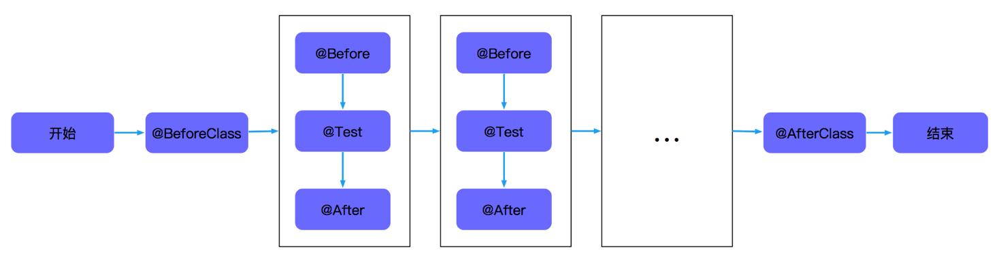
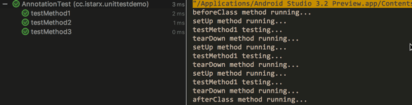
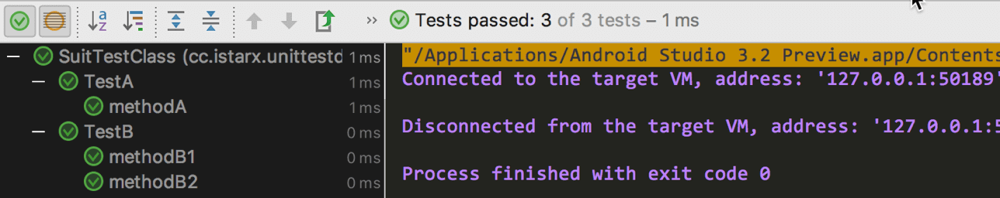

之前对单元测试做了一个简单的介绍，并说明了编写单元测试的重要性。本文主要对单元测试常用的注释做个小结和笔记并分享。
基本注释
Junit 测试框架是业界使用较为广泛的一个单元测试框架，Android 测试支持库中也集成了该测试框架。JUnit 框架为了方便编写测试用例，提供了一些公共的测试：
@Before: 测试用例初始化操作，在测试类内部的每个测试方法运行之前都会运行一次该初始化方法，可以定义多个以@Before注释的方法；@After: 测试用例收尾，包括释放资源和内存等。在测试类内部的每个测试方法运行之后都会运行一次该初始化方法，可以定义多个以@After注释的方法；@Test: 一条测试用例;@BeforeClass: 测试的初始化方法，和@Before的区别在于：@BeforeClass注释的方法在整个测试类中只运行一次，主要用于一些比较耗时或者耗费资源的操作；@AfterClass: 测试的初始化方法，和@After的区别在于：@AfterClass注释的方法在整个测试类中只运行一次，主要用来释放资源；
所以整个测试类的运行流程如下：

假设一个测试类中有名为 testMethod1～testMethod3 的三个测试方法，每个测试方法、@Before、@After、@BeforeClass、@AfterClass注释的方法都打印各自的方法名，如下：
@BeforeClass
public static void beforeClass() { System.out.println("beforeClass method running..."); }
@AfterClass
public static void afterClass() { System.out.println("afterClass method running..."); }
@Before
public void setUp() { System.out.println("setUp method running..."); }
@After
public void tearDown() { System.out.println("tearDown method running..."); }
@Test
public void testMethod1() { System.out.println("testMethod1 testing..."); }
@Test
public void testMethod2() { System.out.println("testMethod1 testing..."); }
@Test
public void testMethod3() { System.out.println("testMethod1 testing..."); }
|
运行结果如下：

虽然在 @BeforeClass中可以初始化一些全局变量，但是不介意这么做，因为如果 new 一个对象，同时这个对象内部持有静态变量，则可能测试用例之间因为这个静态变量的改变相互影响而导致测试不准确。
除了上述注释以外，JUnit 框架还提供了其它一些注释：
异常测试 expteted
异常测试是指验证当前被测试代码或者测试代码会抛出一个特定的异常，例如：
@Test(expected = AssertionError.class)
public void exceptionTest() {
assertEquals(1, 2)
}
|
上述用例只有一个断言语句，在测试的过程中这个断言语句必定会抛出 AssertionError异常，我们在@Test注释的时候添加我们对该条测试用例所期待的异常，即AssertionError.class
超时测试 timeout
超时测试 是指 可以对一个测试用例运行时间进行测试，超过规定时间则认为该测试用例失败。可以用来测试网络数据读取时间或者数据库读取存储等，例如：
@Test (timeout = 800)
public void timeoutTest() {
while (true);
}
|
上述用例中写了一个 while 死循环，如果不指定超时时间，该用例将会无限运行下去，知道手动终止。同时指定该用例时间必须是 <= 800ms，当用例运行时间超过 800ms 时，判定该测试用例为失败。
分类测试@Category
分类测试 是指可以对测试用例进行分类，对测试用例或者测试类添加 @Category({CategoryA.class, CategoryB.class}, ...)对其进行分类 ,例如：
public interface Category1 { String TAG = "Category1"; }
public interface Category2 { String TAG = "Category2"; }
@Category({Category1.class, Category2.class})
public class TestA {
@Test
public void methodA() {
}
}
public class TestB {
@Test
@Category(Category1.class)
public void methodB1() { }
@Test
@Category(Category2.class)
public void methodB2() { }
}
@RunWith(Categories.class)
@Suite.SuiteClasses({TestA.class, TestB.class})
@Categories.IncludeCategory(Category1.class)
@Categories.ExcludeCategory(Category2.class)
public class Category1TestSuit {
}
@RunWith(Categories.class)
@Suite.SuiteClasses({TestA.class,TestB.class})
@Categories.IncludeCategory({Category2.class})
public class Category2TestSuit {
}
|
参数测试@Parameters
参数测试需要在测试类内部先声明需要的参数，并且需要构造函数进行复制，同时需要一个@Parameters诸事的方法进知道参数的取值，做好这些，剩余的事情就由 JUnit 来完成了。以下例子为计算一个简单的计算简称的测试，有一个输入和一个输出：
@RunWith(Parameterized.class)
public class ParameterTest {
private int inputNum;
private int expectedResult;
public ParameterTest(int inputNum, int expectedResult) {
this.inputNum = inputNum;
this.expectedResult = expectedResult;
}
@Parameterized.Parameters
public static Collection getParaList() {
return Arrays.asList(new Object[][]{
{0, 1},
{1, 1},
{2, 2},
{5, 120}
});
}
@Test
public void factorialTest() {
assertEquals(expectedResult, calculate(inputNum));
}
private int calculate(int num) {
if (num == 0 || num == 1) {
return 1;
}
return num * calculate(num - 1);
}
}
|
忽略测试@Ignore
当在调试过程中可能在某些情况下需要跳过一条测试用例、或者一个测试类不让其执行。当某一条测试用例、一个测试类以@Ignore注释时，此用例、或者此测试类内部所有的测试用例不会被执行。
@Test
@Ignore
public void ignoreTest() {
}
|
套件测试
套件测试个分类测试有点类似。分类测试时把类似功能的用例分类到一起，而套件测试则是把一个或多个测试类集中在一起运行。例如：
public class TestA {
@Test
public void methodA() {
}
}
public class TestB {
@Test
public void methodB1() { }
@Test
public void methodB2() { }
}
@RunWith(Suite.class)
@Suite.SuiteClasses({TestA.class, TestB.class})
public class SuitTestClass {
}
|
运行结果如下：

小结
JUnit 框架定义了许多注释，给测试带来了很大方便，可以利用这些注释来编写更全面、更优雅以及更能达到测试目的的测试用例。